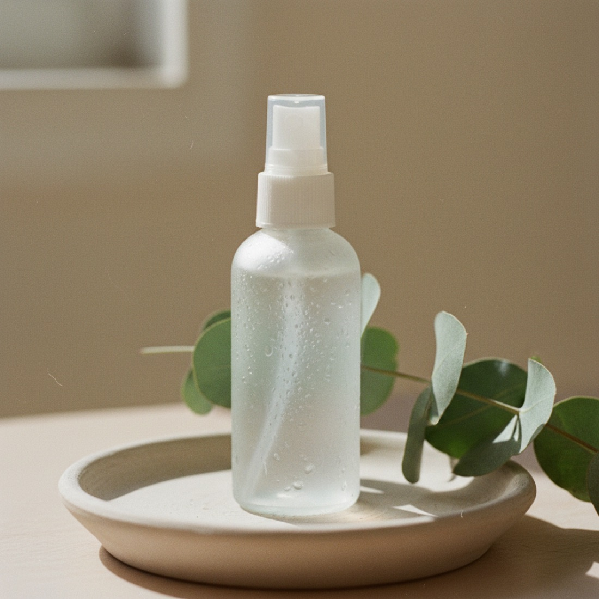

Novità

Un siero leggero che illumina e leviga la grana, con calendula estratta a freddo, camomilla lenitiva e olio di mandorla. Si assorbe in fretta, niente alcol che secca.
Tre piante, dosate per fare il loro lavoro e nient'altro. Niente riempitivi, niente nomi impronunciabili.

Estratta a freddo dai fiori coltivati a pochi chilometri dal laboratorio. Calma i rossori e accompagna il rinnovo della pelle, per una grana più uniforme settimana dopo settimana.
La camomilla lenisce la pelle reattiva, la lavanda dona il profumo delicato del siero: una nota erbacea naturale, mai coperta da fragranze sintetiche.

La base che nutre e protegge il film idrolipidico senza appesantire. Ricco di acido oleico e vitamina E, lascia la pelle elastica e mai lucida.
 Giorno 1
Settimana 4
Giorno 1
Settimana 4
Trascina il cursore: a sinistra la pelle al primo giorno, a destra dopo quattro settimane di Siero Calendula, una applicazione mattina e sera. Su un panel di 84 persone, 9 su 10 hanno notato un colorito più uniforme.
Quattro passaggi, due volte al giorno. Bastano due minuti per trasformarlo in un piccolo rituale.
Pulisci il viso con olio o detergente solido e tampona senza strofinare.
Scalda il siero tra i polpastrelli e premilo sulla pelle ancora umida.
Picchietta delicatamente su viso e collo, insistendo dove la grana è irregolare.
Sigilla con la tua idratante per trattenere acqua e attivi più a lungo.
In tre settimane la mia pelle è più compatta e i rossori sulle guance si sono calmati. Texture leggerissima, perfetta sotto il trucco.
Profumo naturale e delicato, nessuna sensazione di tiratura come con altri sieri. Il contagocce dosa benissimo le 3 gocce.
Pelle sensibile e reattiva: è l'unico siero che tollero senza arrossire. Ho già preso la ricarica, lo terrò in routine fissa.



Se entro 30 giorni la tua pelle non lo ama, te lo rimborsiamo per intero, campione compreso. Formula corta, vasetto ricaricabile, mai test animali.